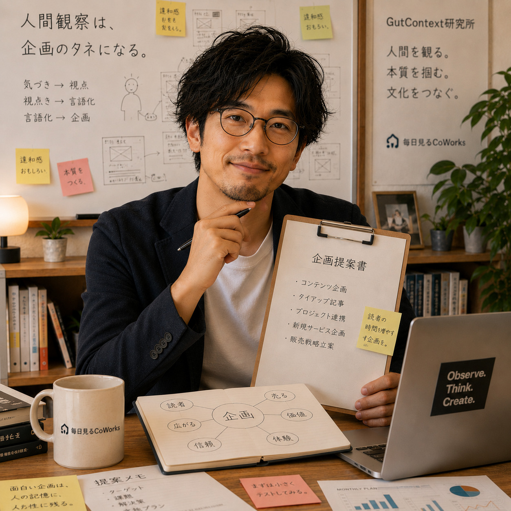

この日のひとつ
Loom
公式サイトを見る （外部サイト）For Whom
こんな人向け
同じ画面操作を何度も説明している編集・広報担当者や、会議を合わせず短い案内動画を渡したい人向けです。
The Answer
結論
Loomは画面と音声を録画し、できあがった動画リンクを相手や共有範囲を指定して渡せる画面説明ツールです。
How to Use
やり方／確認方法
例えば、公開済みイベント記事の確認箇所を新任編集担当へ案内する画面動画を作る想定例です。LoomのStarterアカウントを用意し、録画アプリまたはChrome拡張で画面とマイクを選びます。公開ページの見出しやリンクを指しながら4分程度で説明し、停止後にタイトルを付けて保存します。ShareからLink Settingsを開いて「Only people added can access」を選び、相手のメールアドレスを追加すれば、成果物は動画リンク1件です。相手が招待されたメールのLoomアカウントで再生できるか確認します。これは未実施の想定例です。
Why Today
なぜ今日はこれ？
画面操作の説明を文章にすると、どこを押すかが伝わらず確認のやりとりが続くことがあります。Loomなら画面と音声を同時に録画し、短い案内をリンクで非同期に渡せるので、説明のたたき台を共有しやすくなります。
Cautions & FAQ
注意点・FAQ
Starterの画面録画は1本5分まで、1人あたり25本までです。録画はLoomへアップロードされ、リンクを知る人全員に見せる公開設定もあります。社内画面、個人情報、未公開素材を不用意に録らず、対象者を限定するときは招待先を指定し、公開範囲と視聴アカウントを確認してください。
Loomの無料Starterで、何分・何本まで画面録画できますか？
公式料金ページでは、1人あたり最大25本、画面録画は1本5分までです。今回のような短い説明を1本作る範囲はこの上限内です。
共有リンクを招待した人だけに限定できますか？
できます。ShareのLink Settingsで「Only people added can access」を選び、相手のメールアドレスを追加します。視聴者は招待先と同じメールのLoomアカウントでログインが必要です。Anyone with the linkはリンクを知る人が見られる設定なので、用途に合う公開範囲を選んでください。
Primary Sources
公式ソース
Recommended For
誰に持たせたい？

ショウマ
企画営業部長 企画営業部
企画営業部長のショウマには、記事編集の確認箇所を4分以内の画面案内にまとめ、視聴用リンクと閲覧相手を添えて新任担当へ渡してもらいたいです。文章だけでは伝えにくい画面遷移を非同期で共有できる成果物になります。
プロフィールを見るKei's Note
ケイのひとこと
 ケイ｜広報部長
ケイ｜広報部長
操作を見せながら説明できるので、クリック順を長文にしなくて済むのがよさそうです。最初の1本は確認点を3つほどに絞り、見た人が同じ順序で再現できるかを採用判断の目安にする提案です。

確かめる。
Basic Information
基本情報
- 種別
- Screen Recording / Freemium
- 公式サイト
- 公式サイトを開く（外部サイト）
- 確認日
- 料金
- LoomのStarterは料金ページで0ドルと表示されるプランで、14日間の有料プラン試用とは別です。1人あたり最大25本、画面録画は1本5分までです。この想定例の4分動画1本は範囲内で、上限を超えて継続する場合は有料プランの条件確認が必要です。
- 利用条件
- Loomアカウントと、画面・マイクを録画できるデスクトップアプリまたはChrome拡張が必要です。「Only people added can access」で共有する相手は、招待したメールアドレスのLoomアカウントでログインして再生します。録画画面と音声に含める情報を事前に決めてください。
- 補足
- Loomは録画をホストして共有する画面説明サービスで、Agent SkillやMCP自体ではありません。利用例は公開済みページを使う想定で、実機検証やMMCでの導入実績を示しません。録画した動画はLoomのアカウントにアップロードされます。